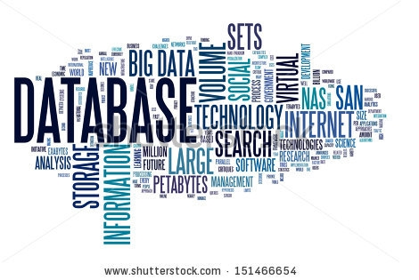

CoBro Consulting's senior staff have extensive experience conducting broad-scale research projects, including program evaluation, statistical analyses, relational database design, survey services, focus group facilitation, structured interviews, and development of professional results reports. CoBro consultants have a deep and extensive understanding of educational program evaluation needs. The following details research and evaluation services provided by CoBro Consulting.
Needs Assessment- CoBro Consulting conducts assessments of organization and community needs to provide information necessary for strategic planning. Methods employed include surveying, conducting focus groups, comparing historical and geographical data, and researching current industry standards and practices to ensure planning is based on informed decisions.
Collecting and Analyzing Baseline Data - CoBro Consulting assists your program in determining necessary baseline data elements for helping assess future program progress, and obtaining and securely maintaining the data. Data collection methods and decisions result in the type of analyses possible, so we will engage in discussions of feasibility, benefits, and challenges with program leadership. Data collection of these elements will then allow multiple options for analyses to determine programming effects.
Establishing Program Performance Measures and Targets - To gauge progress toward established program goals, we work with program leadership teams in determining appropriate performance measures and reasonable quantitative targets for program objectives and goals.
Data Analysis - CoBro consultants have extensive statistical knowledge and expertise in education reform programs. We work with clients to clarify research needs and determine the appropriate statistical analyses to examine program processes and outcomes. In addition, CoBro consultants present statistical findings in an easy-to-understand format for clients.
Survey Design - Surveys can be valuable in providing information on participant opinions, attitudes, and knowledge. CoBro Consulting staff have designed, administered, and analyzed hundreds of unique surveys. We produce both online and paper-based, scannable surveys and guarantee a quick turnaround time for results. Survey services also include processing, analysis of resulting data, and development of multilevel survey results reports.
Facilitation of Focus Groups and Structured Interviews - CoBro Consulting carefully constructs topics and questions for focus group sessions in collaboration with our clients. CoBro Consultants synthesize information from all sessions, extract themes and comments related to similar topics, and provide a summary of findings report.
Assessing Impact of Educational Interventions - Using college awareness outcomes such as those obtained through survey data, educational achievement outcomes such as those on national and state standardized tests or evident through course completion rates, and program participation measures, CoBro Consulting will analyze data from a variety of perspectives to understand program impact and effectiveness.
Results Reporting - CoBro Consulting develops a variety of evaluation results reports for our clients. These reports can be used for internal program development, or sharing program progress and outcomes with stakeholders. These documents may include qualitative and quantitative findings, or may focus more narrowly on a particular evaluation topic. Examples of such reports that we routinely develop for clients include required annual and/or biennial performance reporting, annual survey reports, focus group summaries, and one-page data summary reports.
CoBro Consulting created an online student tracking system to assist with the extensive data collection and reporting tasks required of educational programs. COMPASS (Comprehensive Program Assessment System) serves to expedite manual data entry of program services, generates pre-formatted reports, and allows users to conduct statistical analyses to demonstrate program impact. The following details data management services provided by CoBro Consulting.

System Formatting and Upload - CoBro Consulting provides services related to directly obtaining, formatting, processing, merging, and uploading student- and course-level data needed to abide by federal regulations and fulfill required reporting into the COMPASS system.
Program Service Participation Documentation - CoBro Consulting will customize, implement, and manage the online web-based COMPASS data management system for program service participation data collection. The customized data entry screens allow for expedited entry of service participation data by program staff. Ease-of-use and automatic prompt functions reduce manual entry errors and increase data accuracy.
Reporting and Analyses - COMPASS facilitates collection and reporting of all documentation and data required for ongoing internal and external program evaluation, as well as required federal reporting.
Data Back-up Procedures - CoBro Consulting currently maintains and manages student- and course-level data on state-of-the-art, secure, SSL certificated servers. CoBro technicians strictly adhere to data maintenance procedures that include daily system backups and established data integrity processes.
Data Security - Our technicians strictly adhere to FERPA guidelines and standard security regulations to upload and download data using data encryption, password protection, and secure data transmission processes.
User Training - CoBro technicians will deliver comprehensive onsite and online training sessions employing a hands-on approach to training so program staff can experience the system as they learn about it.
Technical Support - CoBro Consulting offers unlimited, online (via email, instant messaging, and Remote Desktop Connection) and telephone technical assistance to all COMPASS System users 24 hours per day, five days per week.